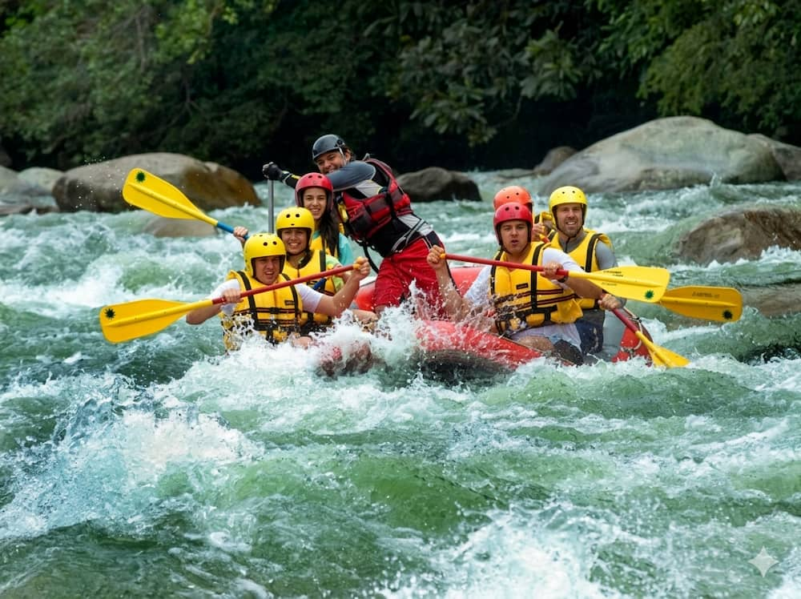
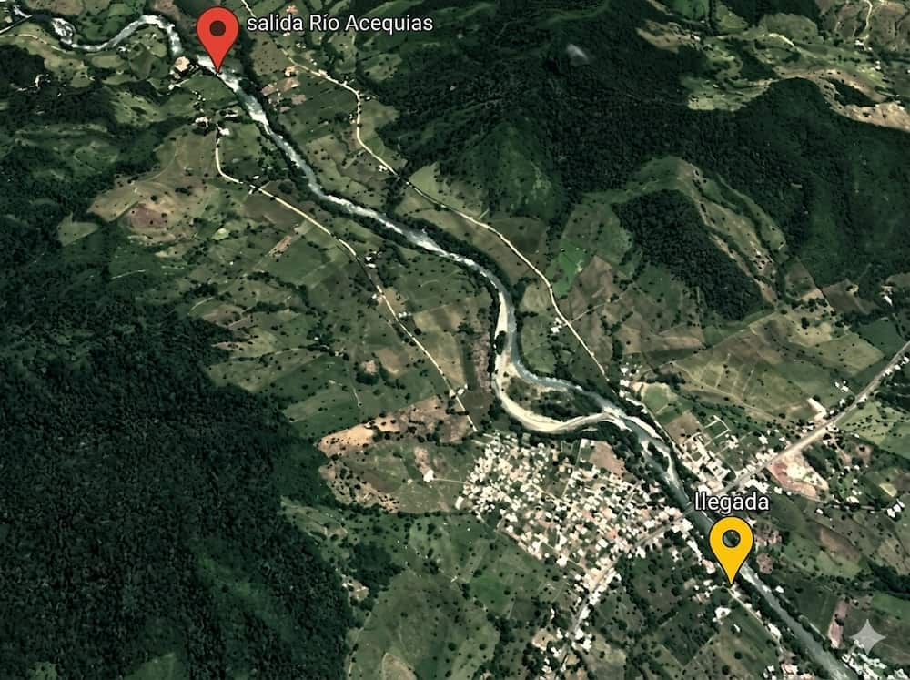

Rafting 4km - Río Acequias (Grade 3)
The ideal tour to start the experience in an exciting and easy-to-assimilate way. This 4km descent offers the perfect balance between adrenaline and safety. Practice what you learned in the safety talk while navigating fun rapids and enjoying river games.
CHRONOGRAM & PRICE:
Price: $35 per person
Departures: 10:00 am and 3:00 pm (Can be coordinated with the group).
Duration: Total activity takes 3 hours. River time is 1 to 1.5 hours depending on the flow. We provide transfer from the arrival point to the starting point.